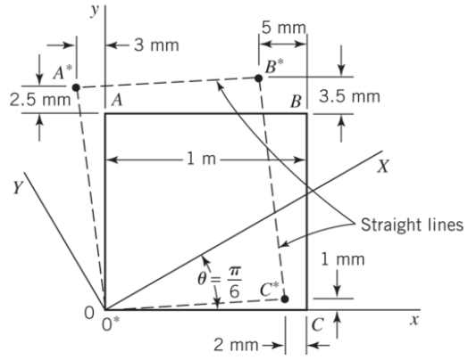
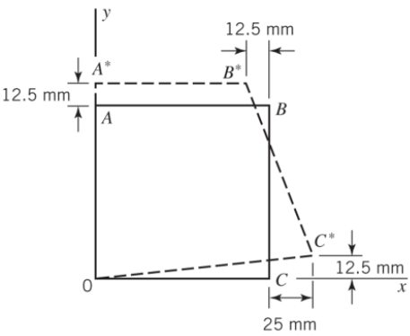

Problems:
-
✓ Problem 1
-
✓ Problem 2
-
✓ Problem 3
-
✓ Problem 4
-
✓ Problem 5
-
✓ Problem 6
-
✓ Problem 7
-
✓ Problem 8
-
❏ Problem 9
-
✓ Problem 10
-
✓ Problem 11
-
✓ Problem 12
1. Problem 1
A square, glass block in the side of a skyscraper is loaded so that the block is in a state of plane strain (\(\epsilon_{zx} = \epsilon_{zy} = \epsilon_{zz} = 0\)). (a) Determine the displacements for the block for the deformations shown and the strain components for the \(xy\)-coordinate axes. (b) Determine the strain components for the \(XY\)-axes.
Figure 1-1. Adapted from assignment instructions.
The displacement for the block are as shown in Fig. 1-1. The strain components along the \(xy\)-axes can be found from building the strain state in matrix notation:
Equations \(u(x, y)\) and \(v(x, y)\) can be found from solving a linear system of equations for which there are four equations and four unknowns:
This means that Eq. 1-1 can now be solved to reveal the strain state of the glass block: \([\epsilon_{xy}] = \begin{bmatrix}-2m & -2m \\-2m & 2.50m\end{bmatrix}\).
To find the strain components projected onto the \(XY\)-axes, which is at some angle offset from the \(xy\)-axes, Eq. 1-4 must be implemented.
, wherein \(\epsilon_{y'}\) can be found by replacing \(\theta\) with \(\theta + \frac{\pi}{2}\) in the equation for \(\epsilon_{x'}\). This yields \([\epsilon_{XY}] = \begin{bmatrix}-491.03u & 2.90m \\-2.90m & 991.03u\end{bmatrix}\)
2. Problem 2
A square plate, \(1~m\) on a long side, is loaded in a state of plane strain and is deformed as shown. (a) Write expressions for the \(u\) and \(v\) displacements for any point on the plate. (b) Determine the components of Green Strain in the plate. (c) Determine the total Green Strain at point \(B\) for a line element in the direction of line \(OB\). (d) For point \(B\), compare the components of strain from part (b) to the components of strain for Small-Displacement Theory. (e) Compare the strain determined in part (c) to the corresponding strain using Small-Displacement Theory.
Figure 2-1. Adapted from assignment instructions.
As demonstrated in Sec. 1, expressions for displacement for any point on the plate may be found by solving Eq. 1-2. This yields the following expressions:
The strain state of the plate may be found by solving Eq. 2-5 with the developed displacement equations.
The strain state, then, becomes: \(\epsilon_{Green} = \begin{bmatrix}-12.42m & -13.70a \\\ -13.70a & 12.58m\end{bmatrix}\). The percent error between \(\epsilon_{Green}\) and \(\epsilon_{Small} = \begin{bmatrix}-12.50m & -13.88a \\\ -13.88a & 12.50m\end{bmatrix}\) is \(0.0062~\%\). Projecting this strain state along the line \(OB\) can be found by the direction of cosines for this \(<1, 1>\) vector (\(l = 0.7071\) and \(m = 0.7071\)): \((\epsilon_{Green})_{OB} = \begin{bmatrix}-8.78m & -9.69a \\\ -9.69a & 8.89m\end{bmatrix}\). The percent error between \(\epsilon_{Small}\) and \((\epsilon_{Green})_{OB}\) is \(0.2876~\%\).
3. Problem 3
Solve Problem 2.3 from the textbook.
A displacement field in a body is given by
where \(c = 10^{-4}\). Determine the state of strain on an element positioned at \((0, 2, 1)\).
The strain state can be found from determining the strain state at the point in the displacement field:
which further yields [eq-5-strain_p] for \(\mathbf{\epsilon}(x = 0, y = 2, z = 1)\).
The strain tensor at point \((0, 2, 1)\), \(\epsilon = \begin{bmatrix}0 & 0 & -200u \\0 & 200u & 400u \\0 & 0 & 200u\end{bmatrix}\).
4. Problem 4
Solve Problem 2.4 from the textbook.
The displacement field and strain distribution in a member have the form
Which relationships connecting the constraints (\(a\)'s, \(b\)'s, and \(c\)'s) make the foregoing expressions (Eq. 4-9) possible?
These equations assume plane-strain; therefore, the constants can be found from the contribution of the respective derivatives of each displacement field equation.
5. Problem 5
Solve Problem 2.9 from the textbook.
A \(100~mm\) by \(150~mm\) rectangular plate \(QABC\) is deformed into the shape shown by the dashed lines in Fig. 5-1. All dimensions shown in the figure are in millimeters. Determine at point \(Q\) (a) the strain components \(\epsilon_{x}\), \(\epsilon_{y}\), and \(\gamma_{xy}\) and (b) the principal strains and the direction of the principal axes.
Following a procedure similar to that displayed in Sec. 1 yields the strain state: \(\begin{bmatrix}-12.50m & -13.88a \\\ -13.88a & 12.50m\end{bmatrix}\) which yields the principal strains: \(\epsilon_{1}, \epsilon_{2}, \epsilon_{3} = 12.50m, 12.50m, 0\) in the \(\theta_{p} = 277.56a~rad\) direction.
6. Problem 6
Solve Problem 2.12 from the textbook.
A thin, rectangular plate \(a = 20~mm \times b = 12~mm\) (Fig. 6-1) is acted upon by a stress distribution resulting in the uniform strains \(\epsilon_{x} = 300\mu\), \(\epsilon_{y} = 500\mu\), and \(\gamma_{xy} = 200\mu\). Determine the changes in length of diagonals \(QB\) and \(AC\).
Because the plate undergoes a displacement that yields a symmetric strain state, the change in length for diagonals \(AC\) and \(QB\) are equal and found by finding the difference of the hypotenuse: e.g. \(a' = (1 + \epsilon_{x})a_{0} = 20.01\). Therefore, \(\Delta l_{AC} = 8.23m~m\) and \(\Delta l_{QB} = 8.23m~m\).
7. Problem 7
Solve Problem 2.22 from the textbook.
Solve Problem 2.21 [1] for a state of strain given by
Problem 2.21 asks to determine (a) the strain invariants; (b) the normal strain in the \(x'\) direction which is directed at an angle \(\theta = 30~^{\circ}\) from the \(x\)-axis; (c) the principal strains \(\epsilon_{1}\), \(\epsilon_{2}\), and \(\epsilon_{3}\); and, (d) the maximum shear strain.
The strain invariants of given strain state (Eq. 7-10):
The normal strain along \(x'\), which is \(\theta = 30~^{\circ}\) up from the \(x\)-axis, is \(\epsilon_{x'} = 556.21u\).
The principal strains come from solving \(\epsilon_{p}^{3} - J_{1}\epsilon_{p}^{2} + J_{2}\epsilon_{p} - J_{3} = 0\):
-
\(\epsilon_{1} = 1.15m\)
-
\(\epsilon_{2} = 231.47u\)
-
\(\epsilon_{3} = 82.74u\)
The maximum principal strain (magnitude and direction), \(\epsilon_{1} = 1.15m~\angle~-360.04y~rad\). The magnitude of the shear strain is the average of the principal strains (from Mohr’s Circle): \(\gamma_{max} = 82.74u\).
8. Problem 8
Solve Problem 2.24 from the textbook.
At a point in a loaded frame, the strain with respect to the coordinate set \(xyz\) is
Determine (a) the magnitudes and directions of the principal strains and (b) the maxmimum shear strains.
The principal strains come from solving \(\epsilon_{p}^{3} - J_{1}\epsilon_{p}^{2} + J_{2}\epsilon_{p} - J_{3} = 0\): The strain invariants of given strain state (Eq. 8-11):
-
\(\epsilon_{1} = 710.18u\)
-
\(\epsilon_{2} = 710.18u\)
-
\(\epsilon_{3} = 79.09u\)
The maximum principal strain (magnitude and direction), \(\epsilon_{1} = 710.18u~\angle~-1.30~rad\). The magnitude of the shear strain is the average of the principal strains (from Mohr’s Circle): \(\gamma_{max} = 79.09u\).
9. Problem 9
Solve Problem 2.28 from the textbook.
A \(16~mm \times 16~mm\) square \(ABCD\) is sketched on a plate before loading. Subsequent to loading, the square becomes the rhombus illustrated in Fig. 9-1. Determine the (a) modulus of elasticity, (b) Poisson’s Ratio, and (c) the shear modulus of elasticity.
10. Problem 10
Solve Problem 2.52 from the textbook.
The distribution of stress in a structural member is given (in megapascals) by Eqs. (d) of Example 1.2 of Chapter 1 (Eq. 10-12). Calculate the strains at the specified point \(Q(\frac{3}{4}, \frac{1}{4}, \frac{1}{2})\) for \(E = 200~GPa\) and \(\nu = 0.25\).
The strain state can be found from determining the strain state at the point in the displacement field:
When Eq. 10-12 and point \(Q\) are plugged into Eq. 10-13, this yields [eq-5-strain_p] for \(\mathbf{\epsilon}(x = 0, y = 2, z = 1)\).
The strain tensor at point \((0, 2, 1)\), \([\epsilon] = \begin{bmatrix}-3.40u & 32.81u & 2.93u \\0 & 6.07u & 0 \\0 & 0 & -371.09n\end{bmatrix}\).
11. Problem 11
Solve Problem 2.53 from the textbook.
An aluminum alloy plate (\(E = 70~GPa\), \(\nu = \frac{1}{3}\)) of dimensions \(a = 300~mm\), \(b = 400~mm\), and thickness \(t = 10~mm\) is subjected to biaxial stresses as shown in Fig. 11-1. Calculate the change in (a) the length \(AB\) and (b) the volume of the plate.
Using the provided stress tensor, the strain state may be found by solving Eq. 11-15 which yields: \([\epsilon] = \begin{bmatrix}0 & -428.57u \\\ -142.86u & 1.14m\end{bmatrix}\). Therefore, \(\Delta b = \epsilon_{y}b = 457.14m~mm\) and \(\Delta V = (\epsilon_{x} + \epsilon_{y})V_{0} = 685.71~mm^{3}\).
12. Problem 12
Solve Problem 2.54 from the textbook.
The steel, rectangular parallelepiped (\(E = 200~GPa\) and \(\nu = 0.3\)) shown in Fig. 12-1 has dimensions \(a = 250~mm\), \(b = 200~mm\), and \(c = 150~mm\). It is subjected to triaxial stresses \(\sigma_{x} = -60~MPa\), \(\sigma_{y} = -50~MPa\), and \(\sigma_{z} = -40~MPa\) acting on the \(x\), \(y\), and \(z\) faces. Determine (a) the changes \(\Delta a\), \(\Delta b\), and \(\Delta c\) in the dimensions of the block, and (b) the change \(\Delta V\) in the volume.
Following a similar procedure as in Sec. 11, the changes in length for each side and the final volume of the parallelepiped are: \(\Delta a = 0.006~mm\), \(\Delta b = 0.04~mm\), \(\Delta c = 0.069~mm\), and \(V_{f} = [1 + (\epsilon_{x} - 2\nu\epsilon_{x})]dxdydz = V_{0} + \Delta V = -2.25k~mm^{3}\).